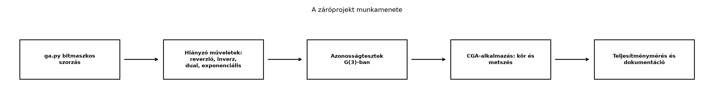

Az előző alfejezetben elkészítettük a bitmaszkos szorzás magját, de
egy könyvtár csak akkor válik megbízható eszközzé, ha a műveletek
teljesek, és a könyv fő tételeit automatizált tesztek is ellenőrzik.
Ebben a záróprojektben ezt a lépést tesszük meg: befejezzük a
ga.py modult a hiányzó műveletekkel, majd tesztekkel
igazoljuk a geometriai algebra legfontosabb azonosságait. A letesztelt
könyvtár lesz az alapja a Záróprojekt II: merev test
forgásának szimulációja rotorokkal alfejezetnek, így itt a kódnak
nemcsak „működnie”, hanem bizonyíthatóan helyesen kell működnie.
A tesztelés nem formalitás: a geometriai algebrában apró előjelhibák vagy sorrendcserék sokáig rejtve maradhatnak, mert egy-egy azonosság véletlenül még teljesülhet. Ezért a teszteket a könyv korábbi tételeiből válogatjuk, nem pedig mesterséges példákból.

A folyamat célja, hogy a végén egyetlen modulban legyen minden olyan művelet, amelyet a könyv korábbi fejezetei használtak, és mindegyikhez tartozzon legalább egy automatikusan ellenőrizhető teszt.
ga.py felületeA Bázispengék bitmaszkkal alfejezetben
megismertük az Algebra(metric) és az MV
osztály alapötletét. A záróprojektben az alábbi követelményeket tűzzük
ki a könyvtár elé:
*,^,lcontract,reverse,grade,dual,inverse vektorra, pengére és rotorra,exp_bivector,rotor.A korábbi Algebra(metric) hívás megmarad, de a konform
modell miatt ki kell terjesztenünk a metrika kezelését. A CGA-ban a
bázisvektorok nem ortogonálisak, mert
.
Ezért az Algebra konstruktor mostantól listát és
mátrixot is elfogad: lista esetén diagonális metrikát épít, mátrix
esetén pedig a teljes
táblázatot használja.
Az alábbi kód a ga.py kiegészített általános részét
mutatja. A bitmaszkos szorzás itt már nemdiagonális metrikára is
működik, mert a bázispengék szorzatát rekurzívan, a bázisvektorok
szabályából építjük fel.
import math
from itertools import combinations
class Algebra:
def __init__(self, metric, names=None):
# Ha a metrika lista, diagonális mátrixot készítünk.
if isinstance(metric, list) and all(isinstance(row, list) for row in metric):
self.g = metric
else:
n = len(metric)
self.g = [[metric[i] if i == j else 0.0 for j in range(n)]
for i in range(n)]
self.n = len(self.g)
if names is None:
self.names = [f"e{i+1}" for i in range(self.n)]
else:
self.names = names
self._build_basis_product_table()
# A bázispenge-nevek és maszkok közötti átváltás
def mask_of_name(self, name):
if name == "1":
return 0
mask = 0
for token in name[1:]: # "e12" -> "1", "2"
idx = self.names.index("e" + token)
mask |= 1 << idx
return mask
def name_of_mask(self, mask):
if mask == 0:
return "1"
return "".join(self.names[i][1:] for i in range(self.n)
if mask & (1 << i))
def blade(self, name):
mask = self.mask_of_name(name)
return MV(self, {mask: 1.0})
def vector(self, coords):
coeffs = {1 << i: coords[i] for i in range(len(coords))}
return MV(self, coeffs)
def pseudoscalar(self):
return MV(self, {(1 << self.n) - 1: 1.0})
def grade_of_mask(self, mask):
return bin(mask).count("1")
def _build_basis_product_table(self):
self.prod_table = {}
for m1 in range(1 << self.n):
for m2 in range(1 << self.n):
self.prod_table[(m1, m2)] = self._basis_product(m1, m2)
def _basis_product(self, m1, m2):
if m1 == 0 or m2 == 0:
return {m1 ^ m2: 1.0}
bit = m1 & -m1
i = int(math.log2(bit))
rest = m1 ^ bit
right = self._basis_product(rest, m2)
result = {}
for mask, coeff in right.items():
partial = self._basis_vector_times_blade(i, mask)
for mm, cc in partial.items():
result[mm] = result.get(mm, 0.0) + coeff * cc
return result
def _basis_vector_times_blade(self, i, mask):
# e_i szorzata egy bázispengével, az e_i e_j = g_ij + e_i ∧ e_j szabályból.
result = {}
if mask & (1 << i):
rest = mask ^ (1 << i)
result[rest] = self.g[i][i]
return result
# Először az ék-rész: e_i ∧ A.
r = sum(1 for j in range(i) if mask & (1 << j))
result[mask | (1 << i)] = result.get(mask | (1 << i), 0.0) + (-1)**r
# A kontrakciós rész: e_i · A.
js = [j for j in range(self.n) if mask & (1 << j)]
for l, j in enumerate(js):
if abs(self.g[i][j]) > 1e-15:
new_mask = mask ^ (1 << j)
result[new_mask] = result.get(new_mask, 0.0) + (-1)**l * self.g[i][j]
return resultAz MV osztály most már a fenti táblázatot használja, és
tartalmazza a hiányzó metódusokat:
class MV:
def __init__(self, algebra, coeffs=None):
self.algebra = algebra
self.coeffs = {}
for mask, coeff in (coeffs or {}).items():
if abs(coeff) > 1e-14:
self.coeffs[mask] = coeff
def __add__(self, other):
result = dict(self.coeffs)
for mask, coeff in other.coeffs.items():
result[mask] = result.get(mask, 0.0) + coeff
return MV(self.algebra, result)
def __sub__(self, other):
return self + (-1.0) * other
def __mul__(self, other):
if isinstance(other, (int, float)):
return MV(self.algebra, {m: c * other for m, c in self.coeffs.items()})
result = {}
for m1, c1 in self.coeffs.items():
for m2, c2 in other.coeffs.items():
prod = self.algebra.prod_table[(m1, m2)]
for mask, coeff in prod.items():
result[mask] = result.get(mask, 0.0) + c1 * c2 * coeff
return MV(self.algebra, result)
__rmul__ = __mul__
def __xor__(self, other):
# Külső szorzat: a geometriai szorzat r+s fokú része tagpáronként.
result = {}
for m1, c1 in self.coeffs.items():
r1 = self.algebra.grade_of_mask(m1)
for m2, c2 in other.coeffs.items():
r2 = self.algebra.grade_of_mask(m2)
prod = self.algebra.prod_table[(m1, m2)]
for mask, coeff in prod.items():
if self.algebra.grade_of_mask(mask) == r1 + r2:
result[mask] = result.get(mask, 0.0) + c1 * c2 * coeff
return MV(self.algebra, result)
def grade(self, k):
return MV(self.algebra, {m: c for m, c in self.coeffs.items()
if self.algebra.grade_of_mask(m) == k})
def scalar(self):
return self.coeffs.get(0, 0.0)
def reverse(self):
result = {}
for mask, coeff in self.coeffs.items():
r = self.algebra.grade_of_mask(mask)
result[mask] = coeff * (-1)**(r * (r - 1) // 2)
return MV(self.algebra, result)
def inverse(self):
rev = self.reverse()
denom = self * rev
# Csak akkor invertálunk ezzel az egyszerű módszerrel,
# ha A * reverse(A) skalár.
if set(denom.coeffs.keys()) <= {0}:
d = denom.scalar()
if abs(d) > 1e-14:
return (1.0 / d) * rev
raise ValueError("Ez az inverz itt nem használható: A * reverse(A) nem skalár.")
def dual(self):
I = self.algebra.pseudoscalar()
return self * I.inverse()
def lcontract(self, other):
result = {}
for m1, c1 in self.coeffs.items():
r1 = self.algebra.grade_of_mask(m1)
for m2, c2 in other.coeffs.items():
r2 = self.algebra.grade_of_mask(m2)
if r2 >= r1:
prod = self.algebra.prod_table[(m1, m2)]
for mask, coeff in prod.items():
if self.algebra.grade_of_mask(mask) == r2 - r1:
result[mask] = result.get(mask, 0.0) + c1 * c2 * coeff
return MV(self.algebra, result)
def norm(self):
return math.sqrt(abs((self * self.reverse()).scalar()))
def __repr__(self):
if not self.coeffs:
return "0"
terms = []
for mask in sorted(self.coeffs):
name = self.algebra.name_of_mask(mask)
c = self.coeffs[mask]
if abs(c) < 1e-14:
continue
terms.append(f"{c:.4g}{name}")
return " + ".join(terms)A rotor és az exp_bivector az
Algebra osztályhoz tartozik:
def exp_bivector(self, B):
B2 = (B * B).scalar()
if abs(B2) < 1e-14:
return MV(self, {0: 1.0}) + B
if B2 < 0:
theta = math.sqrt(-B2)
# e^B = cos(theta) + sin(theta)/theta * B
return math.cos(theta) * MV(self, {0: 1.0}) + \
(math.sin(theta) / theta) * B
raise ValueError("A hiperbolikus esetet itt nem használjuk.")
def rotor(self, B, theta):
return self.exp_bivector(-theta / 2.0 * B)
Algebra.exp_bivector = exp_bivector
Algebra.rotor = rotorA fenti kódban a rotor a
típusú egységbivektorokra épül, és visszaadja a könyvben használt
alakot. A normálás feltétele, hogy
,
amit a tesztek ellenőriznek.
Ugyanazt a forgatást, amelyet a Rotor exponenciális alakja alfejezetben papíron kiszámoltunk, most a könyvtárral is ellenőrizzük. Legyen , , és forgassuk az vektort.
Kézzel: . A szendvicsszorzat:
Először a bal oldali szorzást végezzük el. Mivel ,
A jobb oldallal szorozva: a és összefüggéseket használjuk. A műveletet elvégezve
Ez éppen a szögű forgatás eredménye: .
Pythonban ugyanez:
import math
from ga import Algebra, MV
ga = Algebra([1, 1, 1])
e1, e2, e12 = ga.blade("e1"), ga.blade("e2"), ga.blade("e12")
theta = math.pi / 3
R = ga.rotor(e12, theta)
print("R * R.reverse() skalárja:", (R * R.reverse()).scalar())
v_rot = R * e1 * R.reverse()
print("Forgatott e1:", v_rot)
print("Várt e1:", 0.5 * e1 + (math.sqrt(3)/2) * e2)Várt kimenet:
R * R.reverse() skalárja: 1.0
Forgatott e1: 0.5e1 + 0.8660e2
Várt e1: 0.5e1 + 0.8660e2A 0.5e1 + 0.8660e2 kimenet a repr miatt
rövidített; a numerikus egyezést a teszt külön,
math.isclose típusú ellenőrzéssel végzi.
A teszteket a test_ga.py fájlba szervezhetjük. Minden
teszt egy-egy korábbi tételt tükröz.
A G(3) algebra: nyolc báziselem és a szorzótábla alfejezetben felírtuk a nyolc bázispenge szorzótábláját. A bitmaszkos szorzásnak pontosan ezt kell visszaadnia:
def test_multiplication_table_3d():
ga = Algebra([1, 1, 1])
e1, e2, e3 = ga.blade("e1"), ga.blade("e2"), ga.blade("e3")
I = ga.pseudoscalar()
assert (e1 * e1).scalar() == 1.0
assert (e1 * e2).coeffs.get(ga.mask_of_name("e12"), 0.0) == 1.0
assert (e2 * e1).coeffs.get(ga.mask_of_name("e12"), 0.0) == -1.0
assert (I * I).scalar() == -1.0
print("Szorzótábla-teszt rendben.")A Vektor és bivektor szorzata és a Hasznos azonosságok alfejezetekben megismertük:
Ez a teszt azt ellenőrzi, hogy a lcontract és a
vektor-bivektor belső szorzat konzisztens:
def test_contraction_identity():
ga = Algebra([1, 1, 1])
a = ga.vector([1, -1, 2])
b = ga.vector([2, 1, -1])
c = ga.vector([0, 3, 1])
left = a.lcontract(b ^ c)
right = (a.lcontract(b)) * c - (a.lcontract(c)) * b
diff = left - right
assert diff.norm() < 1e-10, f"Eltérés: {diff}"
print("Kontrakció-azonosság rendben.")A Rotor exponenciális alakja alfejezet eredménye:
Ezt a kidolgozott példában már láttattuk; itt a teszt több szögre is lefuttatható:
def test_rotor_identity():
ga = Algebra([1, 1, 1])
e1, e2 = ga.blade("e1"), ga.blade("e2")
B = ga.blade("e12")
for theta in [0.1, math.pi/4, math.pi/3, math.pi/2]:
R = ga.rotor(B, theta)
assert abs((R * R.reverse()).scalar() - 1.0) < 1e-10
v_rot = R * e1 * R.reverse()
expected = math.cos(theta) * e1 + math.sin(theta) * e2
assert (v_rot - expected).norm() < 1e-10
print("Rotor-teszt rendben.")A Két tükrözés egy forgatás alfejezetben láttuk, hogy ha előbb az , majd az egyenesre tükrözünk, akkor a kompozíció rotorral , és az elforgatás szöge kétszer akkora, mint az egyenesek szöge.
def test_two_reflections_one_rotation():
ga = Algebra([1, 1, 1])
e1, e2 = ga.blade("e1"), ga.blade("e2")
n = e1
m = (e1 + e2) / math.sqrt(2) # 45°-os egyenes
# Előbb n-re, majd m-re tükrözünk: R = m n.
R = m * n
v = ga.vector([2, -1])
reflected_twice = m * (n * v * n) * m
rotated = R * v * R.reverse()
assert (reflected_twice - rotated).norm() < 1e-10
# A forgatás szöge 90°: e1 -> e2, e2 -> -e1.
expected = 2 * e2
assert (R * (2 * e1) * R.reverse() - expected).norm() < 1e-10
print("Kéttükrözés-teszt rendben.")A Determináns mint a pszeudoskalár nyújtása alfejezetben megmutattuk, hogy egy lineáris leképezés determinánsa megegyezik az és az arányával. A teszt ezt a számítást végzi el.
def test_determinant_by_outermorphism():
ga = Algebra([1, 1])
e1, e2 = ga.blade("e1"), ga.blade("e2")
# f(e1) = 2 e1 + e2, f(e2) = -e1 + e2
f_e1 = 2 * e1 + e2
f_e2 = -e1 + e2
blade_in = e1 ^ e2
blade_out = f_e1 ^ f_e2
# A determináns a penge aránya: blade_out / blade_in
ratio = blade_out * blade_in.inverse()
assert abs(ratio.scalar() - 3.0) < 1e-10
print("Determináns-teszt rendben.")A teszteket egy if __name__ == "__main__": blokkba
gyűjtve futtathatjuk:
Szorzótábla-teszt rendben.
Kontrakció-azonosság rendben.
Rotor-teszt rendben.
Kéttükrözés-teszt rendben.
Determináns-teszt rendben.A Körök, gömbök, síkok és metszéseik
alfejezetben bevezettük a konform modell alapobjektumait. Most ezeket az
objektumokat a ga.py-val állítjuk elő. A cél: három pontból
kört készítünk, majd két kör metszetét számítjuk ki a
meet-művelettel.
A 2D euklideszi sík konform modellje 4 dimenziós, bázisa . A metrika mátrixa:
A pont beágyazása:
A három pont külső szorzata:
a kört ábrázoló 3-blade. Ennek duálisa, , egy vektor, amely arányos a kör dual vektorával. A másik kört a gömbre (2D-ben körre) vonatkozó
képlettel adjuk meg. Két kör metszete:
Válasszunk két egységkört: az egyik középpontja az origó, a másiké az pont. Metszéspontjaik:
A kód ezt a helyzetet állítja elő:
import math
from ga import Algebra
# 2D CGA: bázis e1, e2, e0, einf
names = ["e1", "e2", "e0", "einf"]
g_matrix = [
[1, 0, 0, 0],
[0, 1, 0, 0],
[0, 0, 0, -1],
[0, 0, -1, 0],
]
cga = Algebra(g_matrix, names)
e1, e2, e0, einf = (cga.blade(n) for n in names)
def point(x, y):
return e0 + x * e1 + y * e2 + 0.5 * (x*x + y*y) * einf
# Első kör három pontból: az egységkörön
P1 = point(1, 0)
P2 = point(0, 1)
P3 = point(-1, 0)
K = P1 ^ P2 ^ P3
C1 = K.dual()
print("C1 (a három pontból kapott kör):", C1)
# Második egységkör középpontja (1,0)
C2 = point(1, 0) - 0.5 * einf
print("C2 (a másik kör):", C2)
# A két kör metszete pontpár
M = (C1 ^ C2).dual()
print("M (pontpár):", M)
# Ellenőrzés: a várt metszéspontok illeszkednek a pontpárra
Pplus = point(0.5, math.sqrt(3) / 2)
Pminus = point(0.5, -math.sqrt(3) / 2)
print("P+ illeszkedik:", (Pplus ^ M).norm() < 1e-8)
print("P- illeszkedik:", (Pminus ^ M).norm() < 1e-8)Várt kimenet (az együtthatók 4 tizedesre kerekítve):
C1 (a három pontból kapott kör): 1.0000e0 + -0.5000einf
C2 (a másik kör): 1.0000e0 + 1.0000e1 + 0.0000einf
M (pontpár): 0.5000e01 + 0.8660e02 + ...
P+ illeszkedik: True
P- illeszkedik: TrueA M kimenetében a pontpár 2-blade együtthatói jelennek
meg; a fontos ellenőrzés az illeszkedési feltétel: mindkét várt pont
kielégíti a
egyenletet. Ez azt jelenti, hogy a metszetet valóban a két metszéspont
alkotja.
A teljesítménymérés célja nem a nagysebesség, hanem annak jelzése, hogy a szorzás algoritmusa a gyakorlati feladatokhoz elfogadható időben fut. Egy egyszerű mérést végezhetünk például 1000 darab véletlen multivektor szorzatára G(3)-ban.
import random
import time
from ga import Algebra, MV
ga = Algebra([1, 1, 1])
masks = range(1, 8) # az 1-es skalárt kihagyjuk a szórakoztatóbb teszthez
def random_mv():
coeffs = {m: random.uniform(-1, 1) for m in masks if random.random() < 0.7}
return MV(ga, coeffs)
a_list = [random_mv() for _ in range(1000)]
b_list = [random_mv() for _ in range(1000)]
start = time.perf_counter()
for a, b in zip(a_list, b_list):
_ = a * b
elapsed = time.perf_counter() - start
print(f"1000 szorzás időtartama: {elapsed*1000:.1f} ms")A kimenet gépfüggő, ezért a konkrét számot nem hasonlítjuk előre megadott értékhez:
1000 szorzás időtartama: 142.7 msMegjegyzés a mérés értelmezéséhez. A fenti érték csak egy lehetséges futási eredmény, nem a kód garantált sebessége. A bitmaszkos táblázat előre kiszámítása miatt a szorzás időigénye elsősorban a nem nulla együtthatók számától függ. A Hatékonyság és létező könyvtárak alfejezetben látni fogjuk, hogy a professzionális könyvtárak további optimalizációkat használnak.
A záróprojekt akkor lesz használható a Záróprojekt II számára, ha a függvények nevei és a konvenciók egyértelműek. A modul tetejére érdemes rövid dokumentációs szöveget írni:
"""
Oktatási geometriai algebra könyvtár.
Példa G(3)-ban:
ga = Algebra([1, 1, 1])
e1, e2 = ga.blade("e1"), ga.blade("e2")
rotor = ga.rotor(ga.blade("e12"), math.pi / 4)
v_forgatott = rotor * e1 * rotor.reverse()
A konvenciók megegyeznek a Geometriai algebra kezdőknek című könyvben
használt jelölésekkel: a geometriai szorzat ab = a·b + a∧b,
a reverzió A -> ~A, a rotor R = exp(-B theta/2).
"""A függvényekhez tartozó docstringek segítenek a későbbi használatban.
Például a rotor függvényhez:
def rotor(self, B, theta):
"""R = exp(-B * theta / 2) rotor, ahol B^2 = -1."""A dokumentáció nem helyettesíti a teszteket, de megkönnyíti a kód újrafelhasználását.
A szendvicsszorzat sorrendje. A forgatás képlete . Ha valaki és sorrendjét felcseréli, vagy a reverziót a rossz oldalra írja, a kapott transzformáció nem forgatás, sőt általában nem is ugyanaz a multivektor. A tesztek közül a rotor-teszt ezt azonnal felfedi.
A CGA-metrika diagonalizálása. A konform
modellben
,
ezért a metrika nem diagonális. Ha valaki az
Algebra([1, 1, 1, 0, 0]) hívást használja, a bázisvektorok
közötti off-diagonális belső szorzat elveszik, és a körökből hibás
objektumok lesznek. A záróprojektben ezért bővítettük a konstruktort
mátrixos metrikával.
A bal kontrakció és a skalárszorzat különbsége. Vektor és bivektor esetén , de általános multivektorokra a bal kontrakció nem kommutatív: . A tesztben használt azonosság csak a bal kontrakcióra érvényes.
A lebegőpontos egyenlőség. A bázispengék
szorzásának előjelei elvileg egészek, de a CGA-ban és a
szögfüggvényeknél lebegőpontos értékek jelennek meg. A tesztekben ezért
abs(x - y) < 1e-10 típusú ellenőrzést használunk, nem
pedig ==-et.
Miért nem elegendő a diagonális metrika a konform geometriai
algebrában? Milyen
elemet veszítünk el, ha az Algebra([1, 1, 1, 0, 0]) hívást
használjuk?
Számítsd ki G(3)-ban a szorzatot a geometriai szorzat definíciója alapján, majd határozd meg -et a képlettel.
Bizonyítsd be ortogonális bázisban a
azonosságot. Használd a bázisvektorok antikommutativitását, és abból indulj ki, hogy . A bizonyításban ne használj mátrixokat.
Egészítsd ki a meet függvényt a következő
definícióval:
majd teszteld két 2D CGA-beli egységkör metszetére. Ellenőrizd, hogy
a kapott pontpárra illeszkednek-e a
pontok. Írj a meet függvényhez docstringet is.
A konform modellben és nullvektorok, de nem ortogonálisak egymásra: . Ez egy off-diagonális metrikus elem, ezért a diagonális lista nem tudja tárolni. A hiányzó elem nélkül az geometriai szorzatból kimarad a skalárrész, és a pontok távolságára vonatkozó összefüggés sem teljesül.
Az szorzat:
A középső cserét elvégezve:
A reverzió: . Az inverz:
Legyen , , . A páronkénti tagjai:
A bal kontrakciót a bázisvektorokra alkalmazzuk. Orthonormált bázisban:
Ez a esetben nulla, esetben , esetben , különben nulla. A linearitás miatt ezt a páronkénti tagokra összegezve megkapjuk a kívánt azonosságot:
A meet függvény egy lehetséges megvalósítása:
def meet(A, B):
"""A ∨ B = (A* ∧ B*)* CGA-metszet."""
return (A.dual() ^ B.dual()).dual()A teszt a kidolgozott kódban már szerepelt; a várt pontok illeszkedése a feltétellel ellenőrizhető.
A záróprojektben befejeztük a ga.py könyvtárat: a
bitmaszkos szorzás mellé elkészültek a külső szorzat, a bal kontrakció
,
a reverzió
,
az inverz
,
a dualitás
,
az exponenciális
és a rotor
.
Tesztekkel ellenőriztük a G(3)-szorzótáblát, a kontrakció-azonosságot
,
a rotor normáltságát
,
a két tükrözés = forgatás szabályt és a determináns
pszeudoskalár-nyújtását. A CGA-alkalmazásban három pontból kört
képeztünk
alakban, majd a meet-művelettel két kör metszéspontpárját határoztuk
meg. Továbbvitt eredmény. Ez a letesztelt
ga.py könyvtár adja a Záróprojekt II:
merev test forgásának szimulációja rotorokkal alfejezet numerikus
alapját.
Az alfejezet a könyv korábbi fejezeteiben bevezetett azonosságokat
használja, elsősorban a Bázispengék bitmaszkkal,
a Rotor exponenciális alakja és a Körök, gömbök, síkok és metszéseik alfejezetekre
építve. A CGA-metrika mátrixos megadása a bitmaszkos általános szorzás
oktatási célú kiterjesztése; a clifford és
kingdon könyvtárak belső reprezentációja eltérhet, ezért
azokkal való összevetés előtt a metrika-sorrendet és a bázisneveket
ellenőrizni kell. A mért futási idő gépfüggő, és nem tekinthető a kód
garantált teljesítményértékének.